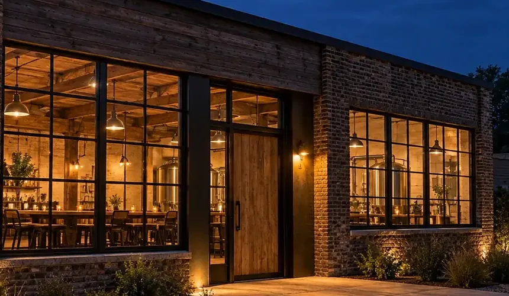

写真はすべてAI生成のイメージです

一倉庫のこと
夕方、窓から
灯りがもれる。
川沿いに残っていた煉瓦の倉庫を、少しずつ直して醸造所にしました。高い天井と大きな窓、倉庫だったころの梁と床は、そのまま使っています。仕込み場は奥、手前の窓ぎわがタップルームです。
大きな設備は置けません。そのかわり、一度に造る量を小さくし、季節ごとに配合を見直せるようにしました。造る量が少ないことは、よいやみの選んだやり方です。
醸造所・設備・数値はすべて見本用の架空の設定です。
二麦とホップと水
選ぶ基準は、
香りが穏やかなこと。

- 焼き加減
- 焼き加減の違う麦を組み合わせ、色と甘みを決めます。宵ノ口は淡く、夜更は深く焙煎したものを多く使います。
- ホップ
- 苦味の強さより、香りの種類で選びます。柑橘、花、草。強すぎる香りは、宵の時間には合わないと考えています。
- 町の水
- 町の水をろ過して使います。やわらかい水は、麦の甘みを素直に出してくれます（見本の設定）。
三仕込みの暦
仕込みから、
樽詰めまで。
一つの銘柄ができるまで、およそひと月。急がせないことが、香りを穏やかに保つ方法です（日数は見本の目安）。
- 仕込み約1日
麦を湯に浸し、甘い麦汁をつくる
- 煮沸約1日
麦汁を煮て、ホップを入れる
- 発酵7〜10日
酵母が糖を分け、香りが生まれる
- 熟成2〜4週
低い温度で落ち着かせる
- 樽詰め開ける日まで
樽に詰め、開ける日を待つ
帯の長さは、日数の比ではありません。